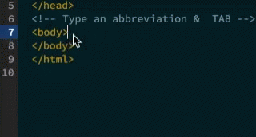

Ik ben Calvin, 17 jaar en ik heb gekozen voor deze opleiding omdat ik graag de ICT in wilde, hoewel ik nog niet zeker weet wat ik precies wil gaan doen na de opleiding. In eerste instantie viel de keuze voor mij op Computer Science and Engineering aan de TU in Delft. Ik ben uiteindelijk hiervan afgestapt omdat het met mijn gezondheid niet zo lekker ging en het me ook afgeraden werd vanuit het ziekenhuis. Toen kwam ik op deze opleiding terecht, die twee goede vrienden van me ook doen. Ik ben toen naar de meeloopdag geweest en voelde me eigenlijk gelijk al thuis, zowel op de school als tussen de leerlingen. Het idee van een school die wat persoonlijker en informeler is, sprak mij ook aan. Tijdens de studie hoop ik beter te leren samenwerken, omdat ik dit leuk vind om te doen, maar er nog niet bijzonder goed in ben. Verder spreekt deze studie me meer aan dan een universitaire studie omdat ik liever iets aan het doen ben dan uit boeken leren. Ik kreeg de indruk dat dat op het hbo wat meer aan de orde is. Verder denk ik dat de opleiding bij mij past omdat ik iemand ben die in oplossingen probeert te denken. In de periode dat ik me niet zo goed voelde bleek dit echter af en toe wat minder te gaan.
